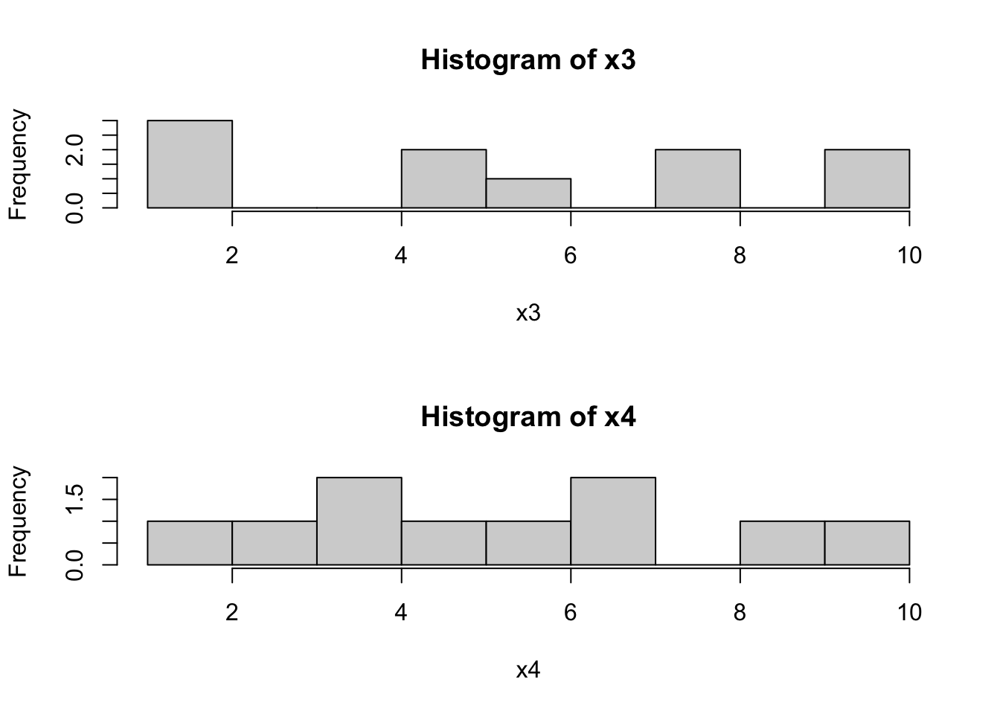

15 Описательные статистики
Итак, мы загрузили данные, посмотрели на них, почистили — пора приступить к внимательному изучению, чего мы там насобирали. Частично мы уже сталкивались с описательными статистиками в предыдущих главах — теперь же будем разбираться подробно.
Описательные статистики (descriptive statistics1) — обобщенные статистики, количественно описывающие особенности имеющихся данных.
Описательная статистика (descriptive statistics2) — области статистики, занимающаяся обработкой статистических данных, их наглядным представлением, и собственно описанием через описательные статистики3.
Зачем нам описательные статиски? Чтобы ёмко описать имеющиеся данные и составить на основе этих описаний общее представление о них, а также обнаружить особенности, которые могут повлиять на дальнейший анализ.
Слишком много описаний, поехали к делу уже!
15.1 Меры центральной тенденции
Насколько ёмко мы хотим описать наши даннные? Ну, попробуем для начала максимально ёмко и максимально просто — одним числом. Например, самым часто встречающимся наблюдением. Как мы будем это наблюдение искать, зависит от шкалы конкретной переменной.
| Шкала | Мера центральная тенденции |
|---|---|
| Номинальная | Мода |
| Порядковая | Медиана |
| Интервальная | Среднее арифметическое |
| Абсолютная | Среднее геометрическое и др. |
15.1.1 Мода
Мода (mode) — наиболее часто встречающееся значение данной переменной.
Тут все достаточно просто и интуитивно понятно. Пусть у нас есть следующий вектор наблюдений:
Если мы составим таблицу частот по этому вектору, то получим следующее:
## x
## 1 2 3 4 6
## 2 2 2 4 1Очевидно, что \(4\) всречается в векторе чаще других значений — это и есть мода.
Также очевидно, что моду невозможно посчитать на непрерывной шкале.

Почему?
Формально моду можно определить как значение переменной, при котором функция вероятности (probability mass function) принимает максимальное значение:
\[ \mathrm{mode}(X) = \max(\mathrm{PMF}(X)) \]
К сожалению, в R нет встроенной функции для расчёта моды.

Напишите функцию, которая принимает на вход вектор значений дискретной переменной, и вычисляет моду данной переменной4. Если мод у данной переменной несколько, необходимо вернуть все.
## [1] 4## [1] 2 415.1.2 Медиана
Если мы уже гуляем на просторах порядковой шкалы, то можем посчитать медиану.
Медиана (median) — это значение, которые располягается на середине сортированного5 вектора значений переменной. То есть, она делит все наблюдения переменной ровно пополам и 50% наблюдений оказывается по одну сторону от медианы, а 50% — по другую. По этой причине медиана также называется вторым квартилем распределения.
Почему нельзя посчитать медиану на номинальной шкале?
Формальное определение медианы зависит от количества значений в векторе: если есть нечётное количество значений — то это ровно середина сортированного вектора, если есть чётное количество наблюдение — то медиана определяется как (арифметическое) среднее между двумя срединными наблюдениями.
\[ \mathrm{median} = \begin{cases} X(\frac{n+1}{2}), & \text{ if } n \text{ is odd},\\ \dfrac{X(\frac{n}{2}) + X(\frac{n}{2}+1)}{2}, & \text{ otherwise}, \end{cases} \] где \(X\) — вектор налюдений данной переменной, \(n\) — число наблюдений, \(X(a)\) — наблюдение с индексом \(a\) в сортированном векторе \(X\).
Для вектора x, который был создан выше, расчёт медианы выглядит так:
## [1] 3Изи.
15.1.3 Среднее
А ежели мы уже на уровне интервальной шкалы, что не грех и среднее посчитать. Вот только какое?
15.1.3.1 Арифметическое
Как правило, считается среднее арифметическое (поэтому если не указано иного, мы понимает под термином «среднее» именно «арифметическое среднее»), и далее люди не заморачиваются, что в целом разумно. По сему, мы уделим основное внимание ему, а другие посмотрим лишь обзорно.
С арифметическим средним (arithmetic mean, mean, average) все знакомы ещё со школы, и считается оно предельно просто — суммируем все наблюдения и полученную сумму делим на количество наблюдений.
\[ \bar x = \dfrac{\sum_{i=1}^{n}x_i}{n}, \] где \(\bar X\) — среднее арифметическое, \(x_i\) — наблюдение в векторе \(X\), \(n\) — количество наблюдений.
В R оно считается абсолютно элементарно:
## [1] 3.090909Кстати, оценка генерального среднего через выборочное среднее — это один из примеров точечной оценки параметра методом моментов.
Давайте сравним для рассмотреные статистики (используем все тот же вектор x):
## [1] 4## [1] 3## [1] 3.090909
Что тут можно пронаблюдать?
- Есть два распределения — более симметричное (сплошная чёрная линия) и сильно скошенное (прерывистая чёрная линия).
- Медианы (синие линии) делят площади под графиками пополам, как и ожидалось.
- Кроме того, у симметричного распределения медиана и среднее оченю близки, а у скошенного распределения среднее смещается в сторону массивного правого хвоста.
- Мода же у скошенного распредления очень близка к пику распределения.
Что из этого можно заключить?
- Близкие значения медианы и среднего — один из показателей симметричности распределения6
- Медиана более устойчива к выбросам
Почему?
- Если у нас квазинепрерывная7 шкала и мы можем посчитать моду, она будет близка к пику распределения
15.1.3.2 Геометрическое
Редко встречается в научных работах, но заради общего представления пусть будет.
Геометрическое среднее (geometric mean) идейно похоже на арифметическое, только наблюдения не складываются, а перемножаются. Отсюда появляется ключевое ограничение на его использование — оно может быть рассчитано только на абсолютной шкале. В психологии абсолютных шкал прям скажем небагато, поэтому, скорее всего, вы его никогда и не встретите в практике.
И всё же есть в психологии одна абсолютная шкала, широко используемая, например, в когнитивных исследованиях. Какая?
Вычисляется она следующим образом:
\[ G_{X} = \sqrt[n]{\prod_{i=1}^n x_i} = \Big(\prod_{i=1}^n x_i\Big)^{\tfrac{1}{n}} \]
Встроенной функции для вычисления геометрического среднего в R нет, но можно поупражняться. 😊
Напишите функцию, которая принимает на вход вектор значений переменной и вычисляет геометрическое среднее. Функция должна возвращать одно число.
## [1] 2.698696Геометрическое среднее используется при работе с экспоненциально растущими величинами (например, численность населения).
15.1.3.3 Гармоническое
Суперэкзотичный покемон.
Тут даже говорить не буду ничего говорить, просто насладитесь формулой, а если хотите больше, то можно покопаться, например, здесь.
\[ H_X = \frac{n \prod_{i=1}^n x_i}{\sum_{i=1}^n (\tfrac{1}{x} \prod_{j=1}^n x_j)} = \frac{n}{\sum_{i=1}^n \tfrac{1}{x_i}} \]
15.1.3.4 Квадратичное
А вот это уже более полезная история. Мы с ним столкнёмся далее, правда под разными масками.
Квадратичное среднее (quadratic mean, root mean square, RMS) — это квадратный корень из среднего квадрата наблюдений. Ничего не понятно, поэтому по порядку.
- есть наблюдение \(x_i\)
- значит есть и его квадрат \(x_i^2\)
- мы умеем считать обычно среднее арифметическое, но ведь \(x_i^2\) — это тоже наблюдение, просто в квадрате, так?
- значит можем посчитать среднее арифметическое квадратов наблюдений — средний квадрат
\[ \frac{\sum_{i=1}^n x_i^2}{n} \]
- норм, а теперь извлечём из этого дела корень — получим то, что там надо
\[ X_{\mathrm{RMS}} = \sqrt{\frac{\sum_{i=1}^n x_i^2}{n}} \]
Что-то оно напоминает, да?
Per se мы его вряд ли ещё когда-то увидим, но вот когда будем идеть дело с estimation theory…
15.1.3.5 Усеченное
Так, ну, тут уже попроще.
Усеченное среднее (truncated mean, trimmed mean) — это младшая сестра среднего арифметического с той только разницей, что вычисляется не по всем наблюдениям, а по усеченной с обеих сторон выборке. То есть, из всей выборке, которая у нас есть, мы выбрасываем сколько-то низких значений и сколько-то высоких. Сколько? Ну, от 5% до 25%. По умолчанию отбрасывается по 2.5% с обеих сторон.
Зачем? Чтобы сравнить с обычным средним. Если они близки, то можно ожидать, что распределение симметрично и/или в нём нет выбросов. Если они значительно различаются, то, скорее всего, требуется почистить данные или обратить внимание на форму распределения.
15.1.3.6 Межквартильное
То же самое, что и в предыдущем пункте. Почти.
Межквартильное среднее (interquartile mean, midmean, IQM) — то же, что и усеченное среднее, только считаем мы по выборке, попавшей в пределы межквартильного размаха.
Как посчитать? Вот так:
\[ X_{\mathrm{IQM}} = \frac{2}{n} \sum_{i=\frac{n}{4}+1}^{\frac{3n}{4}} x_i \]
Напишите функцию, которая вычисляет усеченное среднее и межквартильное среднее по данному вектору наблюдений. Функция должна принимать на вход вектор наблюдений и долю наблюдений, которую необходимо отсечь от выборки, и возвращать именованный вектор, содержащий две требуемые статистики.
15.1.3.7 Взвешенное
Полезная вещь.
Часто бывает такая ситуация, что нас нужно посчитать среднее по каким-либо имеющимся параметрам, но одни параметры для нас важнее, чем другие. Например, мы хотим вычислить суммарный балл обучающегося за курс на основе ряда работ, выполненных в течение курса, однако мы понимаем, что тест из десяти вопросов с множественном выбором явно менее показателен, чем, например, аналитическое эссе или экзаментационная оценка. Что делать? Взвесить параметры!
Что значит взвесить? Умножить на некоторое число. На самом деле, любое. Пусть мы посчитали, что написать эссе в три абстрактных раза тяжелее, чем написать тест, а сдать экзамен в два раза тяжелее, чем написать эссе. Тогда мы можем присвоить баллу за тест вес \(1\), баллу за аналитическое эссе вес \(3\), а экзамену — вес \(6\). Тогда итоговая оценка за курс будет рассчитываться следующим образом:
\[ \text{final score } = 1 \cdot \text{test} + 3 \cdot \text{essay} + 6 \cdot \text{exam} \] Суперкласс. Однако! Весьма вероятно, что в учебном заведении принята единая система оценки для всех видов работ (ну, скажем, некая абстрактная десятибалльная система в сферическом вакууме). Получается, если и за тест, и за эссе, и за экзамен у студента по 10 баллов, то суммарный балл 100, что, кажется, больше, чем 10. Чтобы вернуться к изначальным границам баллов, нужно моделить суммарный балл на сумму весов параметров:
\[ \text{final score } = \frac{1 \cdot \text{test} + 3 \cdot \text{essay} + 6 \cdot \text{exam}}{1 + 3 + 6} \] Кайф! Собственно, это и есть взвешенное среднее. Коэффициенты, на которые мы умножаем значение парамернов, называются весами параметров. И в общем виде формула принимает следующий вид.
\[ \bar x = \frac{\sum_{i=1}^n w_i x_i}{\sum_{i=1}^n w_i} = \sum_{i=1}^n w_i' x_i, \] где \(x_i\) — значения конкретных параметров, \(w_i\) — веса конкретных параметров, \(w_i'\) — нормированные веса параметров.
Вторая часть формулы показывается нам, что можно облегчить себе вычислительную жизнь, если заранее нормировать веса, то есть разделить каждый коэффициент на сумму коэффициентов:
\[ w_i' = \frac{w_i}{\sum_{i=1}^n w_i} \] Тогда сумма коэффициентов будет равна единице. Так чаще всего и поступают, так как тогда коэффициент будет представлять долю, которую весит данный параметр в суммарной оценке. Удобно, практично, красиво.
Взвещенное среднее часто применяется именно во всякого рода ассессментах, и не только образовательных. Например, вы HR-аналитик и оцениваете персонал. Вы аналитически вычисляете веса коэффициентов (допусти, с помощью линейной регрессии), а далее на их основе высчитаете интегральный балл, по которому будете оценивать сотрудников. Это как один из индустриальных примеров.
Есть специально обученная функция, которая вычисляет взвешенное среднее:
weighted.mean(x = c(10, 8, 8), # вектор значений параметров (например, баллы за тест, эссе и экзамен)
w = c(0.1, 0.3, 0.6)) # веса в итоговой оценке## [1] 8.2На этом список средних не заканчивается, но нам обозначенных выше будет более чем достаточно.
15.2 Меры разброса
Несмотря на удобство и высокую степень приятности описания всей выборки только мерой центральной тенденции, этого маловато.

Простенький пример для наглядности. Пусть у нас есть два следующих вектора:
## [1] 5 50 12 4 4 6 24## [1] 20 30 6 8 2 11 1 13 28 31## [1] 15## [1] 15Средние по выборкам одинаковы, однако мы явно наблдаем, что вектора различны. Более того, если пристально посмотреть, то мы обнаружим, что у них разный разброс значений. Вообще-то помня о том, что неопределенность и вариация — главные характеристики статистических данных, было бы крайне неразумно пренебречь описанием этой самой вариативности. Что ж, займемся этим вопросом.
15.2.1 Минимум и максимум
Как можно описать разброс? Указать минимум и максимум!
Это, во-первых, справедливо, во-вторых, просто, что даже останавливаться на этом не будем. Вот соответствующие функции:
## [1] 4## [1] 1## [1] 50## [1] 31Минимум и максимум по переменных всегда полезно смотреть при исследовании данных — так можно обнаружить ошибки записи. Например, если вы психометрик и используете в вопросах опросника семибальную шкалу его высочества Ликерта (Лайкерта), а при исследовании собранных данных обнаруживаете минимум по какому-либо вопросу 0, а максимум 9 — явно что-то пошло не так. Или, допустим, вы анализируете заработную плату сотрудников организации и обнаруживаете минимум по переменной «фонд оплаты труда» ниже МРОТ — повод задуматься. Конечно, сразу выкидывать наблюдения не надо, но точно надо обратить на них внимание и изучить возможные причины появления таких значений — может сотрудник устроен на 0.1 ставки?
Очевидно, что минимум — это первый элемент отсортированного (по возрастанию) массива, а максимум — последний. А как найти минимум (или максимум) без сортировки?
Напишите функцию, которая принимает на вход массив (вектор) и возвращает минимальный (максимальный) элемент массива. Внутри функции нельзя использовать сортировку и встроенные в R функции.
## [1] 4## [1] 1## [1] 50## [1] 31P.S. Функции для поиска минимума и максимума будут практически идентичны, поэтому если вы напишите одну из них, тут же поймете, как её модифицировать, чтобы получить вторую.
P.P.S. Да, это задание на алгоритмы, но это единственное задание на алгоритмы в этой книге. Вот подсказка. 🙄
15.2.2 Размах
А если у нас есть минимум и максимум — значит можно посчитать разницу между ими. И получить такую статистику как размах (range). Добрые люди написали одноименную функцию, правда считает она не сам размах, а выводит минимум и максимум по массиву:
## [1] 4 50## [1] 1 31Но это не беда, потому что другие добрые люди написали более серьезные функции, чтобы облегчить нам статистическую жизнь. С ними познакомимся далее.
15.2.3 Дисперсия
Ну, хорошо, range() нам указал, что действительно разброс в наших векторах различный, несмотря на то, что средние в точности равны. Что нам еще надо?
Вот другой пример. Есть два таких вектора.
## [1] 1 1 2 5 5 6 8 8 10 10## [1] 1 3 4 4 5 6 7 7 9 10## [1] 5.6## [1] 5.6## [1] 1 10## [1] 1 10Вроде и средние одинаковы, и размах одинаковый. Но вектора явно различаются. Можно даже посмотреть на картинку:
par(mfrow=c(2,1)) # размещаем два графика друг по другом
hist(x3, breaks = 10)
hist(x4, breaks = 10)
Всё это безобразие приводит нас к мысли о том, что нам недостаточно описания «общей», «внешней» вариативности, нам надо ещё постараться как-то ухватить вариативность «внутри» ряда наблюдений. И желательно тоже в какой-нибудь одной чиселке.

Будем действовать аккуратно и пошагово. Что у нас есть сейчас? Мы умеем считать средне, которое отражает центральную тенденцию. Ок, давайте зацепимся за него и — раз это «центр» — будем считать вариативность относительного него. Каждое наблюдение в ту или иную сторону отклоняется от среднего. Ок, мы в состоянии посчитать отклонение (deviation) каждого наблюдения:
\[ d = \bar x - x_i \] Топчик! А что, если… посмотреть, как в среднем все наблюдения отклоняются от среднего значения? Отличная же идея! Считаем среднее отклонение!
\[ \frac{\sum_{i=1}^n(\bar x - x_i)}{n}, \] \(n\) — количество наблюдений в выборке.
План хорош — но не без изъяна… Так как отклонения у нас происходят в обе стороны от среднего — в положительную и отрицательную — то и в сумме они дадут нам что-то около нуля. Соответственно, и среднее отклонение у нас будет где-то около нуля. Известно, что есть два путя, как победить минус — взять модуль или возвести в квадрат.
- Модуль. Преимущество первого в том, что размерность величины разброса остается той же, что и у измеряемой переменной8.
- Квадрат. Преимущество второго в том, что сильные отклонения будут оказывать более сильное влияние на окончательное значение статистики, в то время как для первого малые и большие отклонения равноценны.
Второй пункт на практике нам оказывается важнее, посему, мы избирем путь Мандалора, то есть возведения в квадрат.

Итак, возводим отклонения в квадрат и — о, боги — мы получили формулу дисперсии, или вариации (dispersion, variance)!
\[ \sigma^2 = \frac{\sum_{i=1}^n (\bar x - x_i)^2}{n} \] Так, а что мы в итоге получили? Формулу дисперсии. Какой?
Если со средними всё было легко и непринужденно, то с дисперсией нам придётся ещё поскрипеть мозгами над тем, что такое…
15.2.3.1 Степени свободы
Википедия предлагает нам следующее определение: «количество наблюдений в финальном вычислении статистики, которые могут свободно варьироваться». Лаконично, красиво, непонятно.
В собственных заплывах на просторы статистики я нашёл два подхода к тому, как можно приблизиться к пониманию концепта степеней свободы, коими здесь с вами поделюсь. Возможно, они не столько математически точны, как хотелось бы, но позволяют уловить идею. И, в прицнипе, этого достаточно, по крайней мере, до определенного момента вашего статистического бытования.
Прежде всего, необходимо вспомнить, что мы рассчитываем наши статистики на выборке, а не на всей генеральной совокупности. Этот факт и требует внесения коррективов в формулу.
Подход номер раз
Обратим внимание, что для расчёта дисперсии мы первоначально рассчитали выборочное среднее, и далее, основываясь на рассчитанном значении, рассчитываем собственно выборочную дисперсию. То есть, чтобы рассчитать требуемую статистику, мы заранее рассчитали ещё одну как бы зафиксировав нашу выборку, чтобы нам было от чего считать отклонения. И нам надо учесть этот факт в формуле дисперсии — вычесть из числа наблюдений единицу (ту самую «одну статистику», которую мы рассчитали). Таким образом, число степеней свободы будет \(n-1\).
Аналогичная идея будет при вычислении степеней свободы в дисперсионном анализе, например.
Подход номер два
Это рассуждение ближе к математическому. Мы помним, что наш вектор наблюдений — это значения некоторой случайной величины, которые в общем-то могут быть и совсем другими при последующих измерениях. А если представить, что мы знаем только среднее по выборке? Солько измерений нам надо произвести, чтобы восстановить весь ряд наших наблюдений? Если знаем среднее, значит знаем и сумму по выборке. Чтобы восстановить все наблюдения нам надо провести \(n-1\) измерение, ведь если мы знаем сумму \(n-1\) значений, то последнее мы высчитаем следующим образом: \(x_n = \bar x - \sum_{i=1}^{n-1} x_i\). Получается, что если мы знаем среднее, то можем восстановить все \(n\) наблюдений по \(n-1\). Это и есть потерянная степень свободы.
Если таки концепт степеней свободы даётся пока что сложно — не беда. Самая главная общая идея в том, что когда мы рассчитываем выборочные статистики, нам необходимо сделать некоторые дополнительные манипуляции, чтобы избежать смещения оценок. Поэтому вводится понятие степеней свободы, которые позволяют эти манипуляции осуществить.
Итак, возвращаемся к дисперсии и разбираемся, что к чему. Формула, которую мы получили, справедлива для генеральной совокупности. В числителе дроби находится сумма квадратов отклонений (сумму квадратов, sum of squares, SS). В знаменателе находится количество наблюдений. На выборке такая формула будет давать смещённую оценку дисперсии, поэтому она также называется смещённая дисперсия.
Дисперсия генеральной совокупности (смещённая дисперсия) \[ \sigma^2_X = \mathrm{var}(X) = \frac{\sum_{i=1}^n (\bar x - x_i)^2}{n} \]
Для того, чтобы скорректировать оценку дисперсии, необходимо разделить сумму квадратов не на количество наблюдений, а на количество степенйе свободы, которое как мы выяснили равно \(n-1\). Выборочная дисперсия имеет собственное обозначение \(s^2\).
Выборочная дисперсия (несмещённая дисперсия, исправленная дисперсия) \[ s^2 = \frac{\sum_{i=1}^n (\bar x - x_i)^2}{n-1} \]
Функция, которая занимается вычислением дисперсии, называется var(), так как «вариация» (variance) — это полный синоним дисперсии.
## [1] 11.82222## [1] 7.6И — voila! — дисперсии у наших векторов действительно различны.
15.2.3.2 Векторное представление дисперсии
— А скажи мені, автор, заради чого ми так довго топталися на цій дисперсії?
— Заради майбутнього…
Вообще концепт дисперсии — ключевой во всем статистическом анализе, поэтому дисперсия будет встречаться нам так или иначе в каждой теме.
15.2.4 Стандартное отклонение
Есть существует \(\sigma^2\), то где-то должна быть и \(\sigma\). И согласно здравому смыслу, вычисляться она должна извлечением квадратного корня из дисперсии.
Действительно, \(\sigma\) существует и обозначает стандартное отклонение (среднее квадратичное отклонение, standart deviation) — ещё одну меру разброса. А она нам зачем?
Дисперсия прекрасна и замечательна как статистический показатель, но вот её значение достаточно трудно интерпретировать, так как её размерность — это единицы измерения переменной в квадрате. Например, ПРИМЕР. Стандартное отклонение возвращает размерность обратно.
Так как существует две дисперсии — генеральная и выборочная — то и стандартных отклонения будет существовать два:
- стандартное отклонение генеральной совокупности
\[ \sigma_X = \sqrt{\sigma^2_X} = \sqrt{\frac{\sum_{i=1}^n (\bar x - x_i)^2}{n}} = \sqrt{\frac{\sum_{i=1}^n d_i^2}{n}}, \] где \(d_i = \bar x - x_i\) — отклонение. Узнали? Согласны?
- стандартное отклонение выборки

Раскопайте из недр R доказательство, что стандартное отклонение вычисляется согласно представленной выше формуле.
Помните, что R — это программное обеспечение с открытым исходным кодом?
15.2.5 Стандартная ошибка среднего
Набираем много выборок из генеральной совокупности. Получаем распределение средних значений. Стандартное оклонение данного распределение называется стандартной ошибкой среднего (standard error of mean).
- стандартная ошибка среднего в генеральной совокупности
\[ \sigma_X^- = \frac{\sigma_X}{\sqrt{n}} \]
- стандартная ошибка среднего по выборке
\[ s_X^- = \mathrm{se}(X) = \frac{s_X}{\sqrt{n}} \] Стандартная ошибка, во-первых, сама по себе является интервальной оценкой среднего, а кроме того, используется при вычислении доверительного интервала. ОБЪЯСНЕНИЕ
15.2.6 Квантили
Мы уже обсуждали квантили в теме распределений. Теперь попробуем переложить имеющиеся знания на работу с эмпирическими данными.
Как мы знаем, квантиль — это точка на шкале признака, которая не превышается с опредлённой вероятностью по данному распределению. То есть ниже квантиля 0,02 (\(x_{0,02}\)) лежит 2% наблюдений, а ниже квантиля 0,98 (\(x_{0,98}\)) лежит практически все распределение (98%).
С произвольными квантилями в практике мы практически не работаем. Рассмотрим «особенные» квантили.
15.2.6.1 Квартили
Квартили (quartiles) — это квантили, которые делят нашу выборку на четыре части (по 25%).
- нулевой квартиль (\(Q_0\)), он же минимум, так как ниже него лежит 0% наблюдений,
- первый квартиль (\(Q_1\)), ниже которого лежит 25% наблюдений,
- второй квартиль (\(Q_2\)), ниже которого лежит 50% наблюдений — это есть медиана нашего распределения,
- третий квартиль (\(Q_3\)), ниже которого лежит 75% наблюдений,
- четвертый квартиль (\(Q_4\)), он же максимум, так как ниже него лежит 100% наблюдений.

Квартили хорошо визуализируются графиком «ящик с усами» (boxplot). По этому графику можно увидеть симметричность распределения, разброс значений переменной, сравнить вариативность нескольких переменных.
Квартили в R можно рассчитать следующим образом:
## 0% 25% 50% 75% 100%
## 2.184432 3.162326 3.507951 3.804915 4.436762С первым и третьим квартилями связана следующая полезная метрика — межквартильный размах (interquartile range). Это разность между третьим и первым квартилем:
\[ \text{IQR}(X) = Q_3(X) - Q_1(X) = x_{0,75} - x_{0,25} \]
Есть ли в R встроенная функция, вычисляющая межквартильный размах?
Эта метрика помогает нам определить…
15.2.6.1.1 Нехарактерные значения (выбросы)
Вообще нехарактерные значения — это такие значения в нашем распределении, которые сильно отклоняются от среднего. Но что значит «сильно»? Глобально — что определите, то и значит. Однако есть несколько общепринятых подходов к вопросу о том, что считать сильными отклонениями.
Нехарактерными значениями можно считать те, что отклоняются
- от первого квартиля вниз и от третьего квартиля вверх более, чем на полтора межквартильных размаха;
- от выборочного среднего более, чем на два (или три) стандартных отклонения.
Какой подход использовать? Зависит от вас, вашей области, требуемой строгости определения выбросов, … Стандартным считается первый подход.
На графике boxplot выбросы отображаются точками.
Что делать с обнаруженными выбросами? Желательно — анализировать. Если нехарактерные значения представляют собой артефакты записи данных, то можно от них избавиться, а если, несмотря на свою «нехарактерность», они все-таки несут в себе важное содержание, придется учитывать их в анализе, хотя они и доставляют часто множество неудобств.
Напишите функцию, которая находит выбросы. Функция должна принимать на вход числовой вектор и возвращать логический вектор такой же длины, как и исходный. Каждое значение логического вектора будет ответом на вопрос, является ли выбросом соответствующее ему значение исходного вектора. Для определения выбросов воспользуйтесь первым из упомянутых подходов.
## [1] FALSE FALSE FALSE FALSE FALSE FALSE FALSE FALSE FALSE FALSE FALSE FALSE
## [13] FALSE FALSE FALSE FALSE FALSE FALSE FALSE FALSE FALSE FALSE FALSE FALSE
## [25] FALSE FALSE FALSE FALSE FALSE FALSE FALSE FALSE FALSE FALSE FALSE FALSE
## [37] FALSE FALSE FALSE FALSE FALSE FALSE FALSE FALSE FALSE FALSE FALSE FALSE
## [49] FALSE FALSE FALSE FALSE FALSE FALSE FALSE FALSE FALSE FALSE FALSE FALSE
## [61] FALSE FALSE FALSE FALSE FALSE FALSE FALSE FALSE TRUE FALSE FALSE FALSE
## [73] FALSE FALSE FALSE FALSE FALSE FALSE FALSE FALSE FALSE FALSE FALSE FALSE
## [85] FALSE FALSE FALSE FALSE FALSE FALSE FALSE FALSE FALSE FALSE FALSE FALSE
## [97] FALSE FALSE FALSE FALSE TRUE15.3 Асимметрия
Коэффициент асимметрии (skewness) характеризует симметричность распределение относительно среднего значения. Как мы говорили ранее, коэффициент асимметрии связан c третьим центральным моментом распределения, поэтому выборочный коэффициент асимметрии также рассчитывается на его основе.
\[ \text{skew}(X) = \frac{m_3}{s^3} = \frac{\frac{1}{n} \sum_{i=1}^n (\bar x - x_i)^3}{\big(\frac{1}{n-1} \sum_{i=1}^n (\bar x - x_i)^2\big)^{3/2}}, \] где \(\bar x\) — выборочное среднее, \(s\) — выборочное стандартное отклонение, \(m_3\) — выборочный третий центральный момент.
Коэффициент асимметрии может принимать положительные и отрицательные значения, а также быть равным нулю.
- положительный коэффициент асимметрии (positive skew) указывает на наличие длинного правого хвоста распределения, соответственно всё распределение будет скошено влево (то есть преобладают низкие значения)
- отрицательный коэфффициент асимметрии (negative skew) указывает на наличие длинного левого хвоста распределения, соответственно всё распределения будет скошено вправо (то есть преобладают высокие значения)
- значения коэффициента асимметрии, близкие к нулю, говорят о симметричности распределения

15.4 Эксцесс
Коэффиент эксцесса (excess kurtosis) показывает отсроту пика распределения. Как мы говорили ранее, коэффициент эксцесса связан с четвертым центральным моментом распределения, поэтому выборочный коэффициент эксцесса также рассчитывается на его основе.
\[ \text{kurt}(X) = \frac{m_4}{s^4} - 3 = \frac{\frac{1}{n} \sum_{i=1}^n (\bar x - x_i)^4}{\big(\frac{1}{n-1} \sum_{i=1}^n (\bar x - x_i)^2\big)^2} - 3 \]
Что в формуле коэффициента эксцесса делает \(-3\)?
Коэффициент эксцесса, как и коэффициент асимметрии, может принимать положительные, отрицательные или нулевые значения.
- нулевой коэффициент эксцесса обозначает такой же эксцесс, как у стандартного нормального распределения (то есть, «нормальный»)
- положительный коэффициент эксцесса обозначает, что распределение имеет более острую вершину (то есть у нас очень много средних значений, но тонкие «хвосты» — мало низких и высоких значений)
- отрицательный коэффициент эксцесса обозначает, что распределение имеет более пологую вершину (то есть у нас меньше средних значений и толстые «хвосты» — много низких и высоких значений)
15.5 Описательные статистики в R
Ну, хорошо. А считать-то как?
Можно по отдельности:
## ── Attaching packages ─────────────────────────────────────── tidyverse 1.3.0 ──## ✓ tibble 3.0.4 ✓ dplyr 1.0.2
## ✓ tidyr 1.1.2 ✓ stringr 1.4.0
## ✓ readr 1.4.0 ✓ forcats 0.5.0
## ✓ purrr 0.3.4## ── Conflicts ────────────────────────────────────────── tidyverse_conflicts() ──
## x dplyr::filter() masks stats::filter()
## x dplyr::lag() masks stats::lag()# воспользуемся данными, которые уже видели
share <- read_csv('https://raw.githubusercontent.com/angelgardt/mk_ggplot2/master/sharexp_data.csv')##
## ── Column specification ────────────────────────────────────────────────────────
## cols(
## .default = col_double(),
## trialtype = col_character(),
## platform = col_character()
## )
## ℹ Use `spec()` for the full column specifications.## [1] 1.599066## [1] 1.346363## [1] 0.7451164## [1] 0.8632012## [1] 0.5392201## [1] 12.23256Но можно и все сразу:
## vars n mean sd median trimmed mad min max range skew kurtosis se
## X1 1 16200 1.6 0.86 1.35 1.45 0.5 0.54 12.23 11.69 3.03 16.88 0.01Но это мы посчитали по всей переменной времени реакции сразу. А обычно нас интересуют описательные статистики по экспериментальным группам. Это можно сделать так:
##
## Descriptive statistics by group
## group: both
## vars n mean sd median trimmed mad min max range skew kurtosis se
## X1 1 5400 1.38 0.6 1.23 1.29 0.39 0.54 10.89 10.35 3.35 26.63 0.01
## ------------------------------------------------------------
## group: dots
## vars n mean sd median trimmed mad min max range skew kurtosis se
## X1 1 5400 1.68 0.93 1.4 1.52 0.55 0.58 12.23 11.66 2.92 15.97 0.01
## ------------------------------------------------------------
## group: tray
## vars n mean sd median trimmed mad min max range skew kurtosis se
## X1 1 5400 1.74 0.97 1.45 1.57 0.59 0.58 11.88 11.3 2.68 12.25 0.01##
## Descriptive statistics by group
## group: both.8
## vars n mean sd median trimmed mad min max range skew kurtosis se
## X1 1 1800 1.24 0.44 1.13 1.18 0.32 0.54 4.86 4.32 2.11 7.45 0.01
## ------------------------------------------------------------
## group: dots.8
## vars n mean sd median trimmed mad min max range skew kurtosis se
## X1 1 1800 1.43 0.68 1.26 1.33 0.41 0.58 7.65 7.07 3.21 17.73 0.02
## ------------------------------------------------------------
## group: tray.8
## vars n mean sd median trimmed mad min max range skew kurtosis se
## X1 1 1800 1.44 0.62 1.28 1.34 0.42 0.63 6.56 5.93 2.68 12.46 0.01
## ------------------------------------------------------------
## group: both.12
## vars n mean sd median trimmed mad min max range skew kurtosis se
## X1 1 1800 1.37 0.61 1.22 1.28 0.37 0.6 10.89 10.29 4.37 43.73 0.01
## ------------------------------------------------------------
## group: dots.12
## vars n mean sd median trimmed mad min max range skew kurtosis se
## X1 1 1800 1.68 0.86 1.43 1.54 0.56 0.59 11.66 11.07 2.64 14.76 0.02
## ------------------------------------------------------------
## group: tray.12
## vars n mean sd median trimmed mad min max range skew kurtosis se
## X1 1 1800 1.73 0.86 1.5 1.6 0.6 0.6 10.03 9.43 2.19 8.78 0.02
## ------------------------------------------------------------
## group: both.16
## vars n mean sd median trimmed mad min max range skew kurtosis se
## X1 1 1800 1.53 0.69 1.35 1.43 0.49 0.55 9.25 8.7 2.72 16.06 0.02
## ------------------------------------------------------------
## group: dots.16
## vars n mean sd median trimmed mad min max range skew kurtosis se
## X1 1 1800 1.92 1.13 1.59 1.74 0.71 0.6 12.23 11.64 2.62 12.49 0.03
## ------------------------------------------------------------
## group: tray.16
## vars n mean sd median trimmed mad min max range skew kurtosis se
## X1 1 1800 2.05 1.22 1.68 1.85 0.81 0.58 11.88 11.3 2.31 8.61 0.03Но мы же с вами осваивали tidyverse не просто так, поэтому воспользуемся его мощностями:
share %>%
filter(trialtype != 'both') %>%
group_by(trialtype, setsize, platform, id) %>%
summarise(mean = mean(time1),
median = median(time1),
var = var(time1),
sd = sd(time1),
min = min(time1),
max = max(time1),
se = sd/sqrt(length(time1)),
skew = moments::skewness(time1),
kurt = moments::kurtosis(time1))## `summarise()` regrouping output by 'trialtype', 'setsize', 'platform' (override with `.groups` argument)## # A tibble: 216 x 13
## # Groups: trialtype, setsize, platform [12]
## trialtype setsize platform id mean median var sd min max se
## <chr> <dbl> <chr> <dbl> <dbl> <dbl> <dbl> <dbl> <dbl> <dbl> <dbl>
## 1 dots 8 android 4 1.37 1.16 0.342 0.585 0.750 3.40 0.0827
## 2 dots 8 android 6 1.20 0.945 0.669 0.818 0.667 5.92 0.116
## 3 dots 8 android 7 1.86 1.77 0.325 0.570 0.809 3.15 0.0807
## 4 dots 8 android 8 1.85 1.59 0.578 0.760 1.03 4.53 0.108
## 5 dots 8 android 10 1.04 0.964 0.0997 0.316 0.614 2.01 0.0447
## 6 dots 8 android 11 1.20 1.11 0.145 0.380 0.766 2.45 0.0538
## 7 dots 8 android 12 1.21 1.06 0.199 0.447 0.666 2.62 0.0632
## 8 dots 8 android 15 1.48 1.29 0.445 0.667 0.807 4.55 0.0943
## 9 dots 8 android 16 1.16 1.05 0.233 0.483 0.648 2.65 0.0683
## 10 dots 8 android 18 1.42 1.20 0.287 0.536 0.813 2.96 0.0758
## # … with 206 more rows, and 2 more variables: skew <dbl>, kurt <dbl>Кода побольше, зато всё кастомное, а значит всем этим можно управлять! Обратите внимание, что для расчёта коэффициента асимметрии и коэффициента эксцесса потребуются функции из дополнительного пакета moments, который нужно установить через команду install.packages("moments").
Кучу описательных статистик мы насчитали. Теперь разберёмся в квартилями и выбросами (нехарактерными значениями). Когда мы с вами говорили о визуализации, мы упоминали, что график «ящик с усами» (boxplot) отображает выбросы. Посмотрим:
theme_set(theme_bw())
share %>%
filter(trialtype != 'both') %>%
ggplot(aes(as_factor(setsize), time1, color = trialtype)) +
geom_boxplot() +
stat_summary(fun = mean, geom = 'point', shape = 15, position = position_dodge(0.8)) +
facet_wrap(~ platform)
Видим много-много точек над ящиками — это и есть выбросы. Это данные поведенческого эксперимента, поэтому для последующего анализа мы желаем, чтобы таких значений в данных не было. Почистим!
share %>%
filter(trialtype != 'both') %>%
group_by(trialtype, setsize, platform, id) %>%
summarise(lower = quantile(time1)[2] - 1.5 * IQR(time1),
upper = quantile(time1)[4] + 1.5 * IQR(time1)) %>%
right_join(share) %>%
filter(time1 > lower & time1 < upper) %>%
select(-lower, -upper) -> share_clear## `summarise()` regrouping output by 'trialtype', 'setsize', 'platform' (override with `.groups` argument)## Joining, by = c("trialtype", "setsize", "platform", "id")Вот так мы удалили все выбросы. Можно было также воспользоваться функцией is_outlier(), которую мы написали в одном из заданий:
share %>%
filter(trialtype != 'both') %>%
group_by(trialtype, setsize, platform, id) %>%
mutate(outlier = is_outlier(time1)) %>%
filter(!outlier)## # A tibble: 10,213 x 23
## # Groups: trialtype, setsize, platform, id [216]
## trialtype setsize time1 click1x click1y time2 click2x click2y id platform
## <chr> <dbl> <dbl> <dbl> <dbl> <dbl> <dbl> <dbl> <dbl> <chr>
## 1 tray 8 1.67 -227 202 1.28 14 -351 1 ios
## 2 tray 8 1.13 -69 231 1.06 -44 -392 1 ios
## 3 tray 8 1.59 -241 43 0.931 -25 -397 1 ios
## 4 tray 8 1.14 -51 59 0.896 10 -383 1 ios
## 5 tray 8 2.14 99 62 0.879 -29 -372 1 ios
## 6 tray 8 1.63 213 46 0.947 -27 -353 1 ios
## 7 tray 8 2.02 -70 -82 0.970 -19 -394 1 ios
## 8 tray 8 1.08 72 -95 1.33 30 -399 1 ios
## 9 tray 8 1.50 222 -55 0.879 46 -344 1 ios
## 10 tray 8 1.36 -231 -229 0.880 -8 -388 1 ios
## # … with 10,203 more rows, and 13 more variables: posx1 <dbl>, posy1 <dbl>,
## # posxmin1 <dbl>, posxmax1 <dbl>, posymin1 <dbl>, posymax1 <dbl>,
## # posx2 <dbl>, posy2 <dbl>, posxmin2 <dbl>, posxmax2 <dbl>, posymin2 <dbl>,
## # posymax2 <dbl>, outlier <lgl>Ну, вот теперь у нас мало того, что опрятные, так они еще и чистые!
Count noun, plural in this case↩︎
Mass (uncountable) noun↩︎
Обычно противоставляется статистическому выводу (inferential statistics), потому что не делает никаких заключений на основе данных, а просто говорит, что вот жанные такие, какие они есть.↩︎
Обратите внимание на функцию
tabulate().↩︎Здесь важно помнить о нюансах терминов «упорядоченный» и «сортированный». Упорядоченный ряд наблюдений — это ряд чисел, на котором задан определенный порядок (например, по ID испытуемого — 1, 2, 3, 4, …), а сортированный ряд наблюдений — это ряд, упорядоченный по возрастанию или убыванию.↩︎
И очень косвенно — нормальности распределения. Точнее будет сказать так: если распределение симметрично, то можно предположить, оно нормальное, однако это требует дополнительной проверки! Здесь надо помнить про особенности импликации: нормальное распределение всегда симметрично, однако не любое симметричное распределение нормально.↩︎
Квазинепрерывная шкала — это порядковая шкала, относительно которой мы сделали допущение, что она непрерывная. Например, такое допущение делается в психометрике относительно шкалы Ликерта (Лайкерта), когда мы предполагаем, что интервал между двумя соседними значениями мы тоже описали, несмотря на то, что респондент должен выбираться между этими соседними значениями.↩︎
Метрика, основанная на использовании модуля, конечно, существует и называется среднее абсолютное отклонение (mean absolute deviation, MAD): \[ \mathrm{MAD}(X) = \frac{\sum_{i=1}^n |\bar x - x_i|}{n} \] Per se встречается редко, но столкнёмся с её дочерью, когда будем обсуждать метрики качества моделей.
Кстати, вычислить MAD можно не только относительно среднего, но и относительно медианы и даже моды: \[ \mathrm{MAD}_{\mathrm{median}}(X) = \frac{\sum_{i=1}^n |\mathrm{median}(x) - x_i|}{n} \] \[ \mathrm{MAD}_{\mathrm{mode}}(X) = \frac{\sum_{i=1}^n |\mathrm{mode}(x) - x_i|}{n} \]↩︎